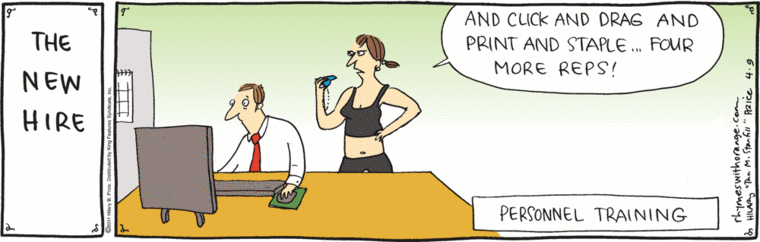

How to prepare my team for RAP

This guide will detail what you need to consider before starting a RAP engagement.
Initial considerations
- Identify a publication/product that needs taking through RAP process
- Fill out a pre-RAP questionnaire
- Identify people in the publication team who will learn RAP process (Product Owner in a team of ~4 analysts of varying skill levels)
- Identify people who can provide support (the RAP team at NHS Digital) through RAP transition
- Assess the team's existing capability
- Plan pre-RAP training
- Consider the appropriate level of RAP to aim for, taking skills into account
-
Estimate timeline, consider pre-RAP training, and distance from BAU
-
Set up a project management tool (e.g. Jira, Trello etc.) for tracking work and confluence space for documenting learning, agreed decisions
- Teams meet and ice breaker session to get to know each other. Set out the plan for the engagement, review roles and responsibilities, lessons learned from previous projects, etc.
RAP pre-engagement questionnaire
The analyst team needs to assess their ability to carry out a RAP project end-to-end by completing a RAP pre-engagement questionnaire(Link TBC).
The questionnaire will contain a series of questions which will revolve around initial project considerations:
- Publication, state of the codebase
- Environment used for publication and RAP process
- Key pain points
- Team capability
- Issues with resources, time constraints, BAU
Creating your RAP team
Instead of embedding an entire team on a Python training course, it is recommended to split out the team into a smaller RAP taskforce, which can work faster and more efficiently on a RAP project. This can be beneficial when there's a larger team as the starting point causing BAU work to mount up to unmanageable levels if the entire team fully commits to training. The team's selection will be based as before on the varying skill levels as result of the RAP pre-engagement questionnaire.
After the training and RAP project is completed, then analysts from the project team can carry over the new found RAP knowledge to other similar taskforces as RAP champions.
Assessing capability
Determine each team members ability to:
- Use Git (on either GitLab/GitHub)
- Python (or any other open source programming language)
- Code reviews
This is recorded based on the basis of how experienced and comfortable they are using the above. This will help determine how many analysts require training and/or the amount of training that is required. Depending on the team's size, it might be challenging to train up 6 analysts at once for example.
Skill requirements for Baseline RAP
To achieve baseline RAP, we recommend analysts familiarise themselves with:
- An introduction to Git and version control
- Python (or R, SQL depending on your project)
- Using Pandas (or PySpark or any R package, depending on your project)
- Code quality and style guides
Skill requirements for RAP in general
As defined from the Government Analysis Function, there isn't a definite way to design a end-to-end RAP pipeline. Once baseline RAP has achieved the following are recommended as components to improving a RAP pipeline:
- Be able to use Git and GitHub/Gitlab, creating/cloning a repo, commits, pushing to a repo, handling branches, merge requests, merge conflicts
- Python (or R, SQL) Pandas or PySpark dataframes, merging tables, filtering, aggregation, grouping by
- Using code reviews
- Testing code (e.g. unit testing, backtesting etc.)
- Be able to create a repository with good project structure
- functions and/or code modularity
- error handling for functions
- documentation of functions
- project packaging
- code style, best coding practices
- input data validation
- logging of data and the analysis
- continuous integration (CI/CD)
- dependency management, environment management (yaml files, requirements.txt etc.)
Training
Training should start a few weeks at least before the RAP project's kick off date, depending on training requirements and modules to be taught. During this period, analysts who are new to Python or Git enrol on the respective course that introduces them to their topic of choice. If the RAP team is completely new to programming, we recommend to start training at least a month before the RAP engagement starts.
Depending on the analyst team's capability, there are different training pathways responsive to different needs. For example, not every person on the analyst team will require training on Git as they might already be knowledgeable.
Analysts new to programming and version control
We recommend before the RAP engagement (example for Python/Pandas) for analysts to enrol on courses on:
- Git/version control
- Introduction to Python and programming (data types etc)
- Functions
- Pandas
- Familiarity with software engineering best practices, style guides (e.g. PEP8)
Experienced users
- Object-oriented programming
- Unit tests
- Project structure
- Any from the beginner's training pathway
During RAP
Pair programming support
During a RAP project (e.g. at the start of the thin slice it can be beneficial to set up coding buddy pairs, usually an experienced programmer with an inexperienced one, to form a mentoring style collaboration and in addition to help with troubleshooting code, version control, code reviews and any programming related questions.
The level of engagement is up to the programming pairs, daily catch-ups for instance is often observed as a workable standard.
We found this style of engagement beneficial to teams new to RAP and programming in general, as support from experienced programmers and experts on RAP can offer a significant impact on the success of RAP projects.
How to run training during RAP project
Once the RAP project commences, the first training session to carry out is:
-
the Introduction to Git and Using Git Collaboratively. Each training session requires a support drop in session where analysts from the project team join in case they are stuck on any exercises from the guides. A repository set up for the purposes of practising Git is used and provided for practice.
-
and basics of Python/Pandas. Using the project's data, we recommend to use data from your project to create a tutorial script that produces a basic output using our basics of Pandas guide and go over elementary Pandas operations that will beginners with their first coding steps. This could cover joins, group bys, filtering, selecting and renaming columns etc.
Other training to consider running depending on your team's requirements. We suggest to use your project to create examples for any training you follow to make training feel natural and applicable to your team:
-
Python functions. The thin slice refactoring stage offers a great opportunity to refactor reusable code into functions, and your team to be able to practice with writing functions. These functions can be used as example of an introduction to Python functions i.e. how to call functions, when to pass arguments, number of arguments, keyword arguments, return, pass, docstrings etc.
-
How to do code reviews. Code reviews can be deceiving as someone who's new to code reviews understand that their work is being judged. It is recommended to hold a team code review session and review a few example scripts, using our guidelines and considerations to demonstrate how useful and invaluable code reviews can be in improving overall code quality while also developing your coding skills at the same time.
-
Project structure session, how to package your code. A python package is a way to bundle your code into a single thing that can be shared and reused. Our goal is to be able to share and reuse code across NHS Digital as well as externally.
-
PEP8 and Linting. Linting is a tool that highlights programming errors, stylistic errors and bugs in your code. Each programming software has its own linting application, it is recommended to enable this feature as it helps avoiding this type of errors.
-
Session on the thin slice concept and design. The thin slice concept can be hard to understand sometimes for inexperienced analysts so a session covering the thin slice approach is recommended.
-
Debugging code using an IDE. Like linting, debugging using a programming software can be a feature of its own, it is recommended to help your team familiarise themselves with debugging to improve troubleshooting efficiency.
How to measure progress
We recommend using the RAP maturity levels as performance indicators to best capture a team's progress.
These levels aim to offer teams a recommended maturity map for adopting RAP practices. We have seen that teams who skip the early capabilities struggle to make effective progress. These capabilities are independent and so you don't need to adopt all at once. Team leads should balance the BAU delivery, resourcing constraints, and RAP development as fits their agreed objectives.
For example, if all members of the RAP project team are comfortable using version control (i.e. merge requests, merge conflicts, Git commands workflow), then using Git and GitLab can be ticked off as a KPI.